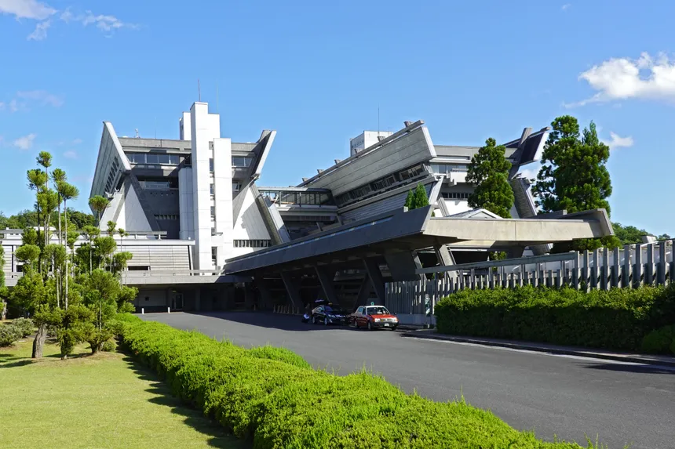

Que es el Protocolo de Kioto
El Protocolo de Kioto es un acuerdo internacional clave en la lucha contra el cambio climático, adoptado en diciembre de 1997 y en vigor desde 2005. Fue diseñado con el objetivo principal de reducir las emisiones de gases de efecto invernadero, los cuales son considerados los principales responsables del calentamiento global y el cambio climático. Estos gases, como el dióxido de carbono (CO₂), el metano (CH₄) y el óxido nitroso (N₂O), provienen principalmente de la quema de combustibles fósiles, la deforestación y ciertas prácticas agrícolas, y su acumulación en la atmósfera contribuye a un aumento de las temperaturas globales y alteraciones en los patrones climáticos.
El protocolo busca estabilizar la concentración de estos gases en la atmósfera a un nivel que evite impactos peligrosos para el clima y las sociedades humanas. Para lograrlo, establece compromisos vinculantes para los países industrializados y en desarrollo avanzado, ya que reconoce que son los principales responsables de las emisiones históricas y actuales de gases de efecto invernadero. Este principio se basa en la idea de "responsabilidades comunes pero diferenciadas", que implica que, aunque todos los países deben actuar, los más desarrollados deben asumir una mayor carga debido a su contribución histórica al problema.
